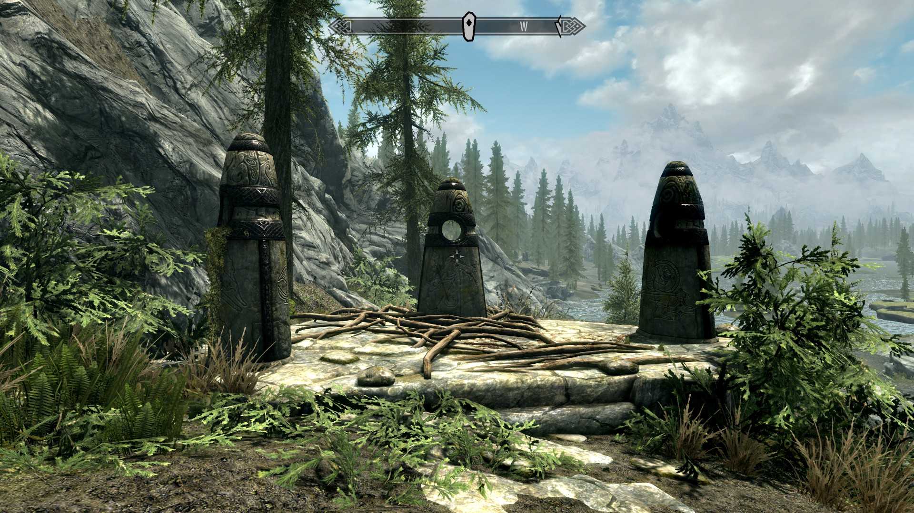
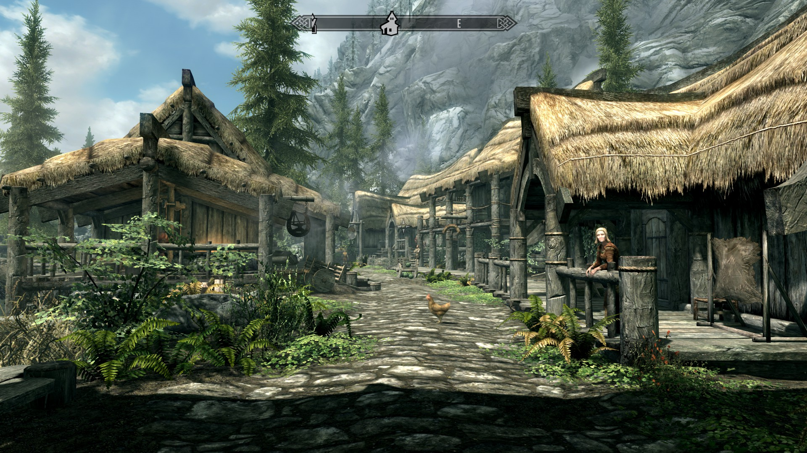
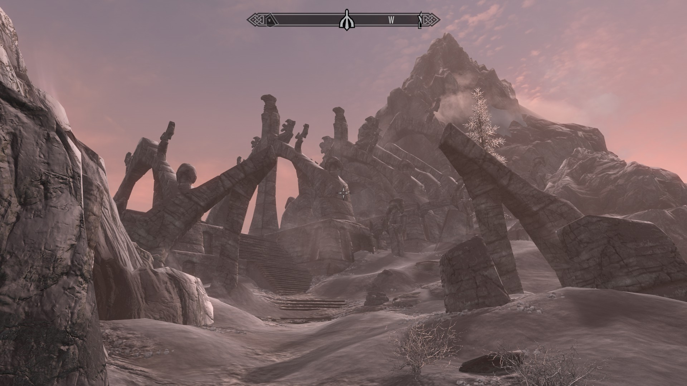
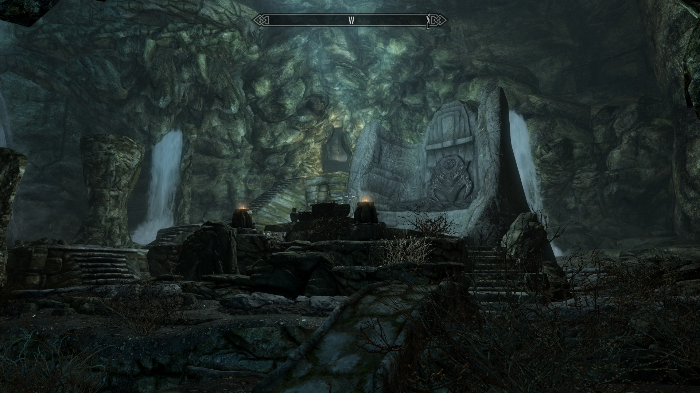
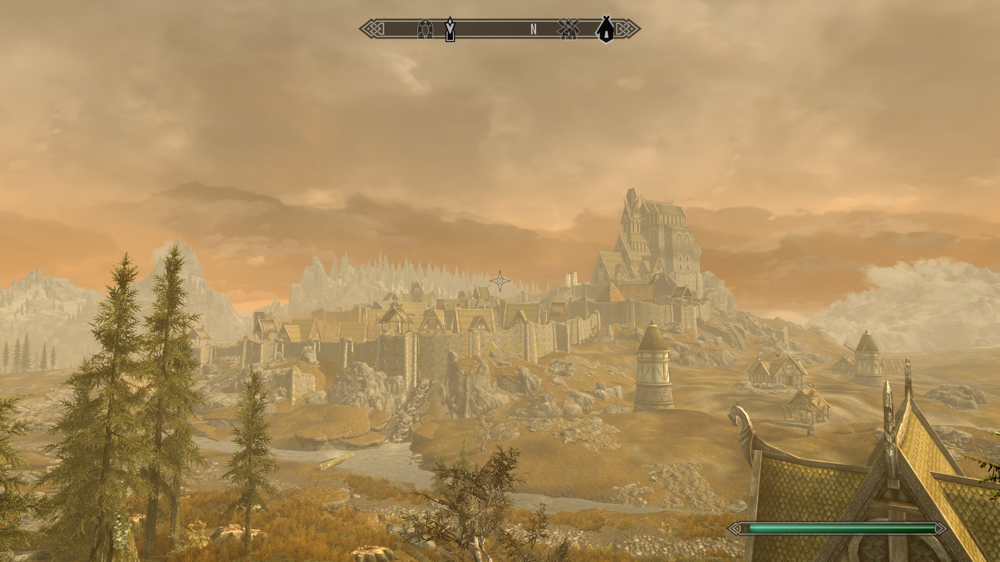
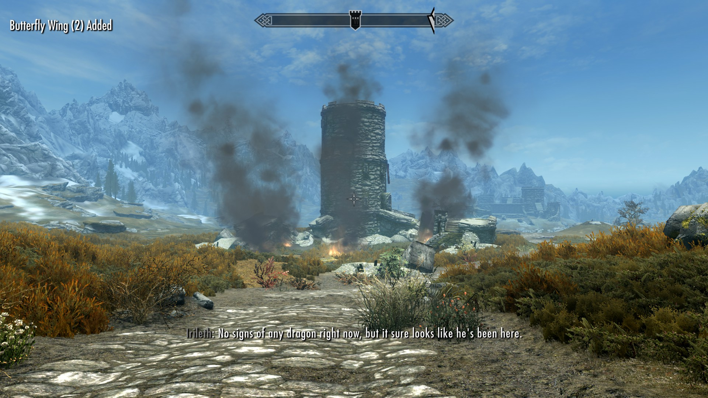
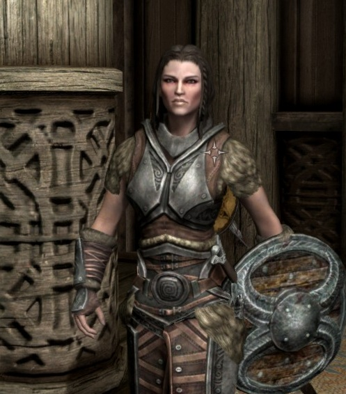

Skyrim-projekti
Mitä tutoriaalin jälkeen?
Riverwood
No ihan mitä haluat. En kyl suosittele tekemään Thieves Guildia kun oot level 1, koska siinä tarvii sniikkailla, ja se on aika kivuliasta jos on tosi pieni sneak level. (Tiedän kyllä, et jotkut tekee sitä silti.) Mutta noin niinku muuten: olet vapaa.
Tässä kohtaa main quest ohjaa sut köpöttelemään läheiseen Riverwoodin kylään. Mut ennen Riverwoodia saatat törmätä kolmeen pystyssä sojottavaan kiveen, joista voit valkkaa itelles jonkun supervoiman. Eli siis siinä on Mage Stone, Warrior Stone ja Thief Stone, joista voit valita, minkälaiset taidot sulla kehittyy nopeiten. Tällä valinnalla ei oikeesti oo ihan kauheesti väliä ainakaan oman kokemuksen mukaan.

Riippuen siitä, valitsitko alussa Ralofin vai Hadvarin niin tämä Riverwood-kohtaus pikkusen muuttuu. Ralof vie sut siskonsa luokse ja Hadvar setänsä luokse. Kummin päin vain, niin siinä käydään semmonen "aaah lohikäärmeitä hui kamala" -tyyppinen keskustelu, ja sut lähetetään viemään sanaa Whiterunin kaupunkiin paikalliselle jaarlille.

Ei kannata hyökätä kanan kimppuun.
Bleak Falls Barrow
Ähäkutti. Tämä voi jakaa mielipiteitä, mutta mun asiantunteva mielipide on se, että aina Riverwoodista Bleak Falls Barrowiin. Se on muinainen raunio tois puol jokke Riverwoodista katsottuna ja sieltä saa semmosen siistin kiven, minkä tarvitset ihan hetken päästä pelin main questia varten. Jos haet sen tässä kohtaa, niin vältyt ylimääräiseltä juoksentelulta. Aika on rahaa, vai miten se nyt menikään.

Matkalla Bleak Falls Barrow'hun kohtaat pari sutta ja pari bandittia, mutta ne saa ihan näppärästi kukistettua koska vihollisten taso mukautuu sinun tasoosi. Kukkulan huipulla näet tosi siistin raunion, jossa on rosmoja ja syvemmältä löytyy käveleviä ruumiita eli draugreita. Ne on aika perinteisiä vihollisia tässä pelissä ja niitä on about kaikkialla.

Raunion lopussa on bossfight, ja saat tältä bossilta sen Dragonstonen, jota tarvitset aivan juuri. Tässä bossihuoneessa on ainakin kaksi piilotettua arkkua, joista saa jotain pientä loottia napattua itselleen.
Whiterun

Seuraavaksi suuntaat kohti Whiterunin kaupunkia, jossa juttelet jaarli Balrgruufin kanssa ja annat Dragonstonen velholle nimeltä Farengar ja saat mainetta ja kunniaa, kuten asiaan kuuluu. Kunnes tulee hurja käänne, nimittäin lohikäärme on nähty läheisellä vahtitornilla ja se pitää pysäyttää, ennen kuin se polttaa koko tornin poroksi. Ja koska sinä kuitenkin näit omin silmin lohikäärmeen vain hetkeä aiemmin, niin jaarli itse haluaa, että SINÄ lähdet pysäyttämään tuon hirmuliskon. Elikkä ei kun matkaan ja lohikäärmettä metsästämään!

Vahtitorni on ilmiliekeissä! Voi kamala. Eikä aikaakaan, kun lohikäärme Mirmulnir saapuu paikalle ja hönkii lieskoja kaikkien niskaan. Sinun tehtäväsi on yhdessä Whiterunin sotilaiden kanssa kukistaa se. Tämä projekti saattaa vaatia nuolen jos toisenkin, mutta kyllä Mirmulnir lopulta kukistuu.
Ja mitäs kummaa! Kun lohikäärme kuolla kupsahtaa, niin sinä yhtäkkiä imet sen sielun itseesi, sepäs
vasta onkin hurjaa. Yksi sotilaista kutsuu sua dragonborniksi, mitä se sitten tarkoittaakaan.
Ei muuta kuin takaisin kylille hakemaan palkintoa. Mutta kun pääset takaisin kaupunkiin, niin taivaista
kuuluu jylisevä ääni: "DO-VAH-KIIN". Jaarli kertookin sulle, että harmaaparrat, elikkä
Greybeardsit siellä huutelee. Se oli kutsuhuuto dragonbornille, eli sinulle.
Lopuksi sut julistetaan Thaneksi, eli olet nyt kaupungin siistein tyyppi ja saat oman palvelijan. Se on Lydia ja se on aina tiellä. Suosittelen kuitenkin ottaa sen tässä vaiheessa mukaan, koska siitä lienee hyötyä hetken päästä.
